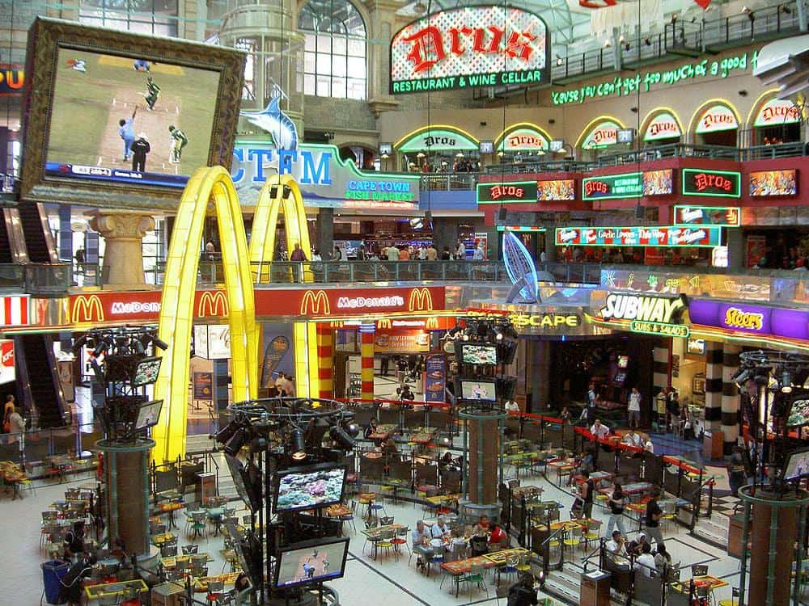
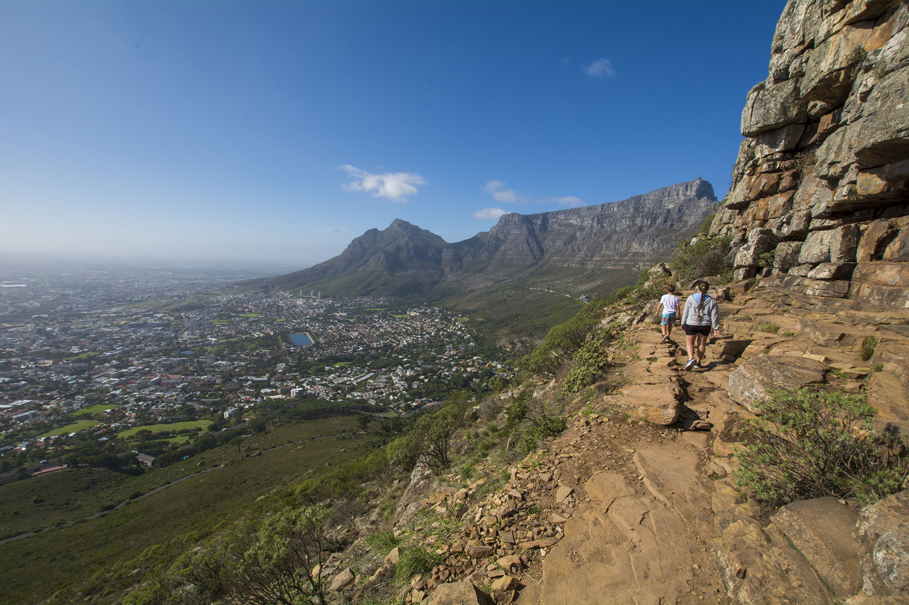
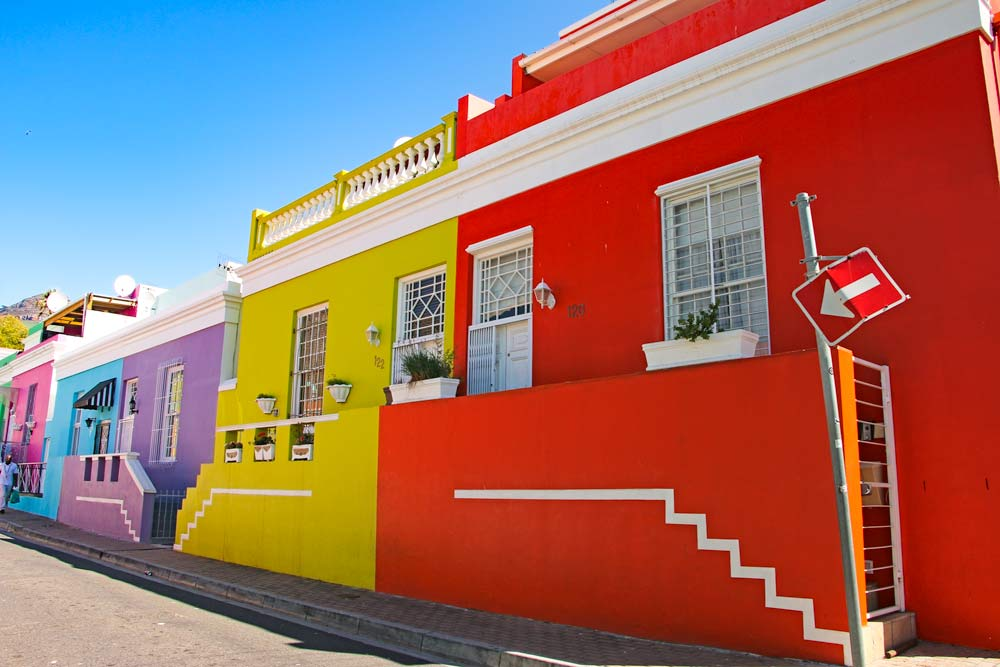

Cape Town is a port city on South Africa’s southwest coast, on a peninsula beneath the imposing Table Mountain. Slowly rotating cable cars climb to the mountain’s flat top, from which there are sweeping views of the city, the busy harbor and boats heading for Robben Island, the notorious prison that once held Nelson Mandela, which is now a living museumCape Town is the second most populous city in South Africa, after Johannesburg, and also the legislative capital of South Africa. Colloquially named the Mother City,it is the largest city of the Western Cape province and forms part of the City of Cape Town metropolitan municipality.

Go swiming ,Cape Town has a variety of beaches to choose from .

"Lets go shopping"Canal walk is one of the biggest malls in Cape Town,it has alot of stores in it you might even get lost if you doont trace your steps.
Table Mountain is one of Cape Towns tourist attractions.Cape Tonians enjoy hiking this mountain,put on your training shoes and hike with me.
Lets go watch a live game of soccer at greenpoint stadium.

Lets take a walk down Bo-kaap.
